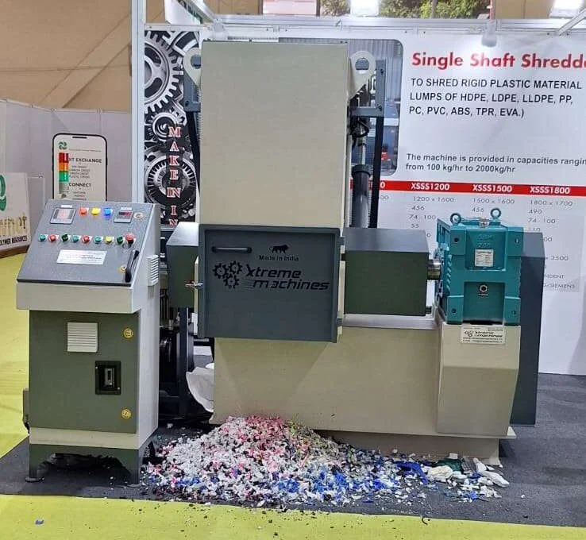
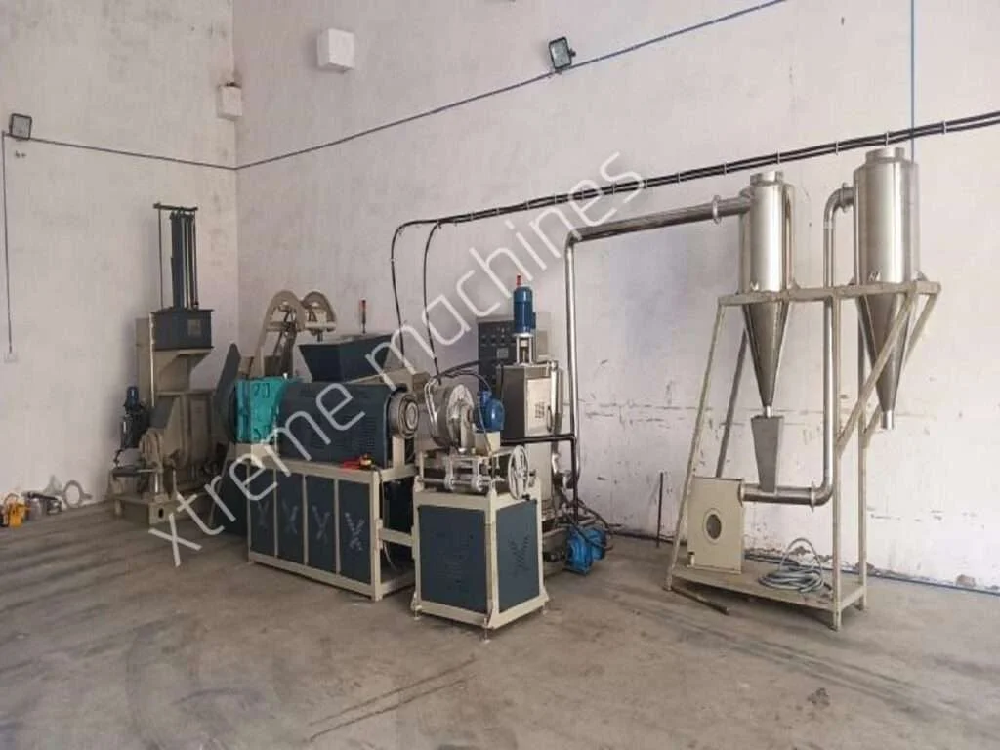
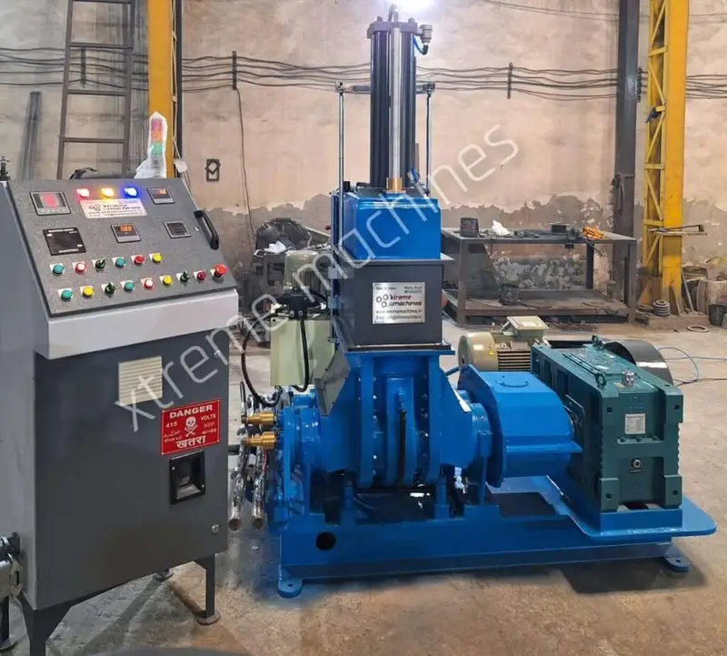
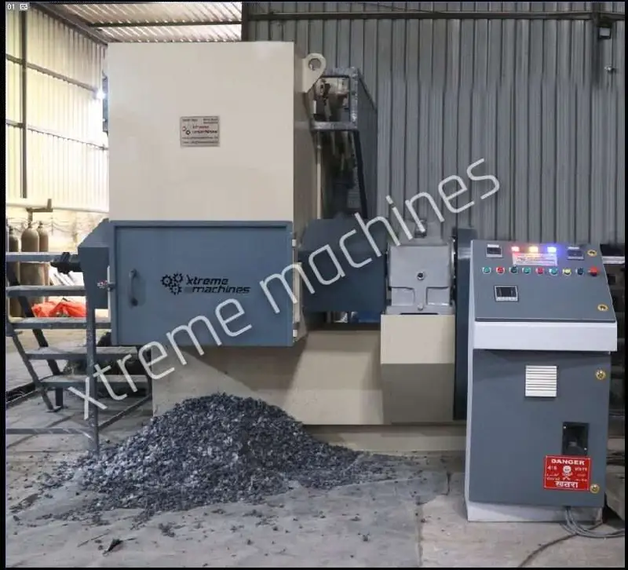
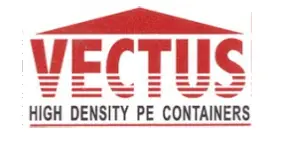
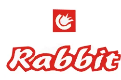

At Xtreme Machines, we pride ourselves on being at the forefront of innovation and technology in the production of engineering machines. Our commitment to excellence is reflected in our state-of-the-art machinery and sophisticated technology, which enable us to manufacture premium quality Rubber and Plastic Processing Machines. As a leading manufacturer, exporter, and supplier in the industry, we have established a strong clientele worldwide.






A reputable filler master batch manufacturer in Delhi, Xtreme Machines specializes in cutting-edge equipment and processing solutions for the creation of premium filler masterbatch. For a variety of plastic production applications, our machines are built to facilitate the effective mixing, compounding, dispersion, and processing of polymers with fillers and additives.
Xtreme Machines offers dependable solutions for manufacturers engaged in plastic compounding, masterbatch production, polymer processing, packaging, films, pipes, sheets, injection molding, extrusion, and other plastic applications. The company places a strong emphasis on engineering, durability, production efficiency, and consistent processing performance.
Xtreme Machines provides industrial processing equipment made to satisfy various production capacities and manufacturing needs if you're looking for a trustworthy Filler Master Batch Supplier in Delhi.
In order to add mineral fillers and other additives to polymer materials, the plastics industry frequently uses filler masterbatch. To achieve a consistent masterbatch with uniform filler distribution and dependable processing characteristics, proper mixing and dispersion are crucial.
For effective compounding and dispersion during filler masterbatch production, Xtreme Machines offers mechanical solutions. Our machinery is designed for industrial uses where reliable operation, efficient production, and consistent material mixing are crucial.
Our proficiency with rubber and plastic processing equipment enables us to offer solutions to clients seeking to enhance their masterbatch manufacturing procedures and attain reliable results.
Selecting suitable machinery is essential for producing consistent and high-quality filler masterbatch. Xtreme Machines focuses on practical machine engineering and robust construction to support continuous industrial production.
Our goal is to provide dependable machinery solutions that help manufacturers achieve efficient and consistent plastic compounding operations.
As an experienced Filler Master Batch Supplier in Delhi, Xtreme Machines serves manufacturers involved in various plastic processing applications.
Filler masterbatch can help manufacturers incorporate fillers into polymer compounds efficiently while optimizing material utilization and supporting desired product properties. The final masterbatch formulation depends on the polymer, filler, additive package, loading percentage, and intended application.
Our machinery solutions can support applications involving polymers and formulations used in:
Xtreme Machines works with manufacturers looking for reliable equipment for their plastic compounding and filler masterbatch production requirements.
A concentrated combination containing fillers evenly distributed throughout a polymer carrier is called a filler masterbatch. In order to provide the necessary formulation and material properties, it is then combined with a base polymer during plastic processing.
Depending on the purpose and formulation, calcium carbonate and other mineral-based fillers are frequently employed in masterbatch production.
Effective dispersion and mixing are necessary for a well processed filler masterbatch in order to distribute the filler uniformly throughout the carrier polymer.
Because of this, effective compounding equipment is crucial to the production of masterbatches.
The production of filler masterbatch involves several important processing stages, including material feeding, mixing, dispersion, compounding, extrusion, cooling, and pelletizing, depending on the production line configuration.
Xtreme Machines provides machinery solutions that can be integrated into plastic processing and compounding operations according to production requirements.
Our focus is to provide equipment that supports:
Effective mixing of polymers, fillers, and additives.
Consistent distribution of fillers throughout the compound.
Machinery designed for industrial production environments.
Robust construction for demanding manufacturing applications.
Designed to support repeatable processing conditions and output.
Filler masterbatch is used across several plastic manufacturing industries. Depending on the formulation and end-use requirements, filler masterbatch can be used in applications such as:
Filler masterbatch can be used in different film applications, including packaging and industrial films, depending on the polymer and formulation.
Manufacturers can use masterbatch formulations for different packaging products where specific material characteristics and cost-performance requirements need to be achieved.
Filler masterbatch can be incorporated into suitable polymer systems for manufacturing molded plastic components and products.
Masterbatch can be used in extrusion-based applications such as sheets, profiles, pipes, and other plastic products, depending on the formulation.
Filler masterbatch is also used in the production of various household and consumer plastic products where suitable material properties and processing performance are required.
Industrial filler masterbatch production requires machinery capable of handling polymer materials, fillers, additives, and different processing conditions.
Xtreme Machines focuses on supplying machinery for rubber and plastic processing applications with an emphasis on strong construction, efficient operation, and practical industrial design.
Our team can help manufacturers identify suitable machinery based on factors such as:
This approach helps manufacturers select machinery according to their actual production requirements rather than using a one-size-fits-all solution.
Xtreme Machines has established itself as a manufacturer, exporter, and supplier of rubber and plastic processing machinery. The company's existing machinery portfolio includes Compound Lines, Dispersion Kneaders, and Single Shaft Shredders.
Our engineering-focused approach allows us to provide machinery solutions for different industrial processing requirements.
Processing solutions designed for high-volume rubber and plastic compounding applications.
Machinery designed for intensive mixing, kneading, and dispersion of rubber and plastic materials.
Industrial shredding equipment designed to reduce different materials using a rotating shaft equipped with cutting blades.
This broader machinery expertise allows Xtreme Machines to understand the requirements of manufacturers operating in the rubber and plastic processing sector.
We focus on practical machine design and industrial performance to support demanding manufacturing environments.
Our machinery is designed with durability and long-term industrial operation in mind.
Machine requirements can vary according to polymer type, filler, production capacity, and final application. We focus on understanding these requirements before recommending a suitable solution.
Xtreme Machines provides support for technical queries, after-sales service, and spare parts requirements.
Our machinery solutions are designed for manufacturers working across rubber, plastic, polymer, compounding, and related processing industries.
Xtreme Machines is a Delhi-based manufacturer, exporter, and supplier of rubber and plastic processing machinery and provides machinery solutions for filler masterbatch and plastic compounding applications.
Xtreme Machines is a supplier of industrial processing machinery for manufacturers involved in filler masterbatch and polymer compounding applications.
Filler masterbatch is a concentrated polymer-based material containing a high percentage of filler that can be blended with a base polymer during plastic processing. The formulation varies according to the required application and material properties.
Filler masterbatch can be used in applications such as plastic films, packaging products, extrusion, injection molding, sheets, profiles, pipes, and other plastic manufacturing processes, depending on the formulation.
Filler masterbatch may contain mineral fillers such as calcium carbonate along with a suitable polymer carrier and additives. The exact formulation depends on the intended application and required product properties.
Uniform dispersion helps distribute filler particles consistently throughout the polymer carrier. Effective mixing and compounding can therefore play an important role in achieving consistent masterbatch quality.
Xtreme Machines provides industrial machinery solutions for rubber and plastic processing, including compound lines, dispersion kneaders, and shredding equipment. The company focuses on robust construction, efficient processing, technical support, and industrial applications.
Looking for a reliable Filler Master Batch Manufacturer in Delhi for your plastic compounding and masterbatch production requirements?
Xtreme Machines can help you explore suitable machinery based on your polymer, filler, production capacity, processing requirements, and end application.
Whether you are setting up a new filler masterbatch production facility or upgrading an existing plastic processing line, our team can assist you with an appropriate machinery solution.
Xtreme Machines
Plot No. 72/6, Khasra No. 72/9/2/1, Metro Pillar #485, Swarn Park, Mundka, Rohtak Road, New Delhi – 110041, India
Phone: +91 981-032-2070 | +91 987-330-0087
Email: info@xtrememachines.in
If you are searching for a Filler Master Batch Manufacturer in Delhi, Filler Master Batch Supplier in Delhi, or a reliable machinery partner for plastic compounding applications, choose Xtreme Machines for industrial-focused processing solutions.
Contact Xtreme Machines today to discuss your filler masterbatch machinery requirements.
+91 981-032-2070
info@xtrememachines.in
Plot No. 72/6, Khasra No. 72/9/2/1, Metro Pillar #485, Swarn Park, Mundka, Rohtak Road, New Delhi 110041 (INDIA)